V Congreso Internacional de Investigación, Desarrollo e Innovación (I+D+I), UASD, 2026
Universidad Autónoma de Santo Domingo · Facultad de Ciencias
Ver presentación en GitHub Pages:
https://geofis.github.io/ciidi-uasd-2026-deteccion-automatizada-tramos-costeros-arenosos/
2026-11-18
Pregunta: ¿podemos identificar automáticamente playas arenosas en el litoral dominicano?
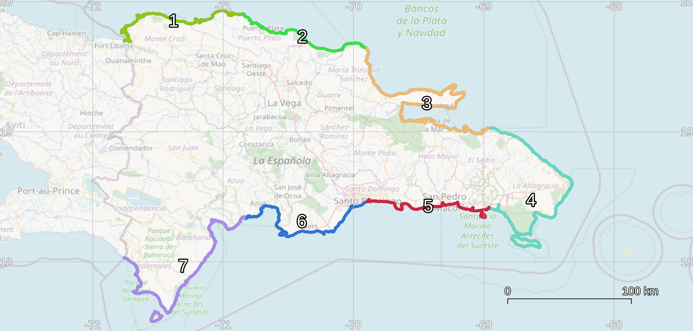
Desarrollar y aplicar un flujo reproducible de clasificación de coberturas costeras para identificar tramos arenosos candidatos a seguimiento multitemporal.
Valor científico y operativo
Aplicación principal
Advertencia: la clase playa no equivale automáticamente a una línea de costa extraíble.
S2Coast2023 (fishnet poligonal) → unión y depuración multipartes/monopartes → unidades insulares ≳9 km² → conversión a polilíneas → cortes en desembocaduras de Dajabón y Pedernales → costa dominicana de La Española + Beata, Saona y Catalina.
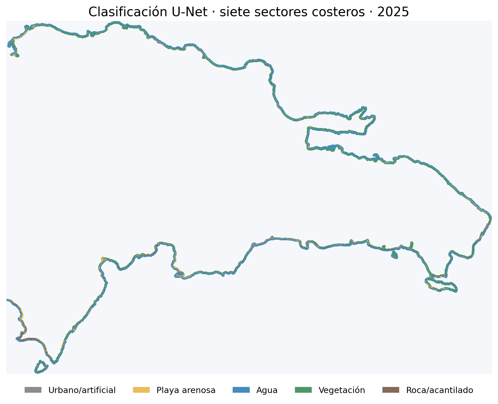
Cuadrícula de referencia de 100 × 100 km, siete sectores; buffer de 1 km a cada lado de la línea costera. Mosaico ilustrativo derivado de los rásteres clasificados (no sustituye una delimitación vectorial oficial).
| Fuente | Predictores | Número |
|---|---|---|
| Sentinel-2 SR | B2, B3, B4, B8, B11, B12; NDVI, NDWI, MNDWI, BSI (índice de suelo desnudo), brillo (reflectancia media del visible), BR (reflectancia media visible) | 12 |
| Dynamic World | agua, árboles, herbáceas, construido, desnudo | 5 |
| Sentinel-1 GRD | VV, VH, VV−VH | 3 |
| NASADEM | elevación, pendiente | 2 |
| Total | 22 |
Período de composición: 15 enero–15 marzo de 2025. Resolución de exportación: 10 m.
.keras y aplicado posteriormente en Colab.Google Earth Engine
Google Colab
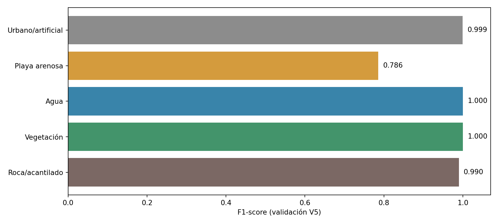
F1 de playa arenosa: 0,786 · Precisión: 0,740 · Exhaustividad: 0,838.
Evaluación V5 del conjunto de validación del entrenamiento; no es una validación independiente nacional de los siete sectores.
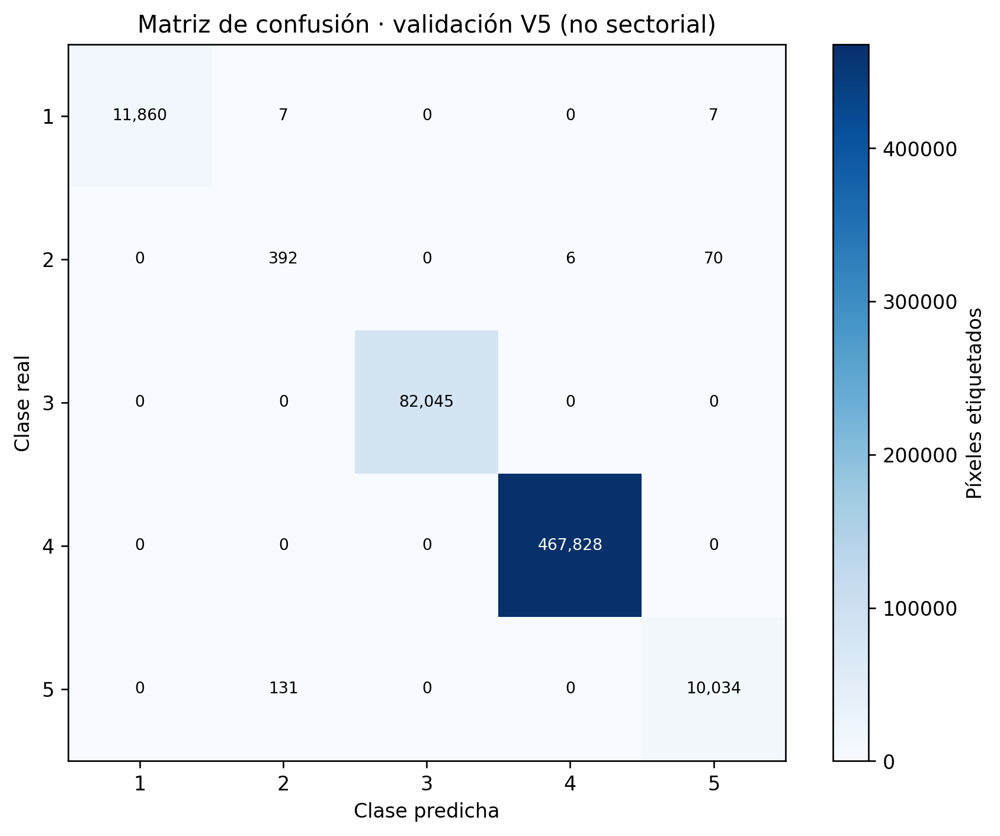
Clases
1 · Urbano/artificial
2 · Playa arenosa
3 · Agua
4 · Vegetación
5 · Roca/acantilado
Cómo leerla
Filas: realidad
Columnas: predicción
Diagonal: aciertos
Fuera: confusiones
Principal error:
Playa ↔︎ roca
F1 macro ≈ 0,955; el desequilibrio de clases exige comunicar por separado el rendimiento sobre playa arenosa.
Mosaico de visualización a resolución reducida a partir de los siete GeoTIFF de clases; en los solapes se utiliza la primera clasificación disponible.
Clasificación nacional
Distribución de los siete sectores
Izquierda: mosaico nacional de visualización a resolución reducida, generado a partir de los siete GeoTIFF de clasificación. Derecha: distribución espacial de los siete sectores de inferencia. En los solapes del mosaico se utiliza la primera clasificación disponible.
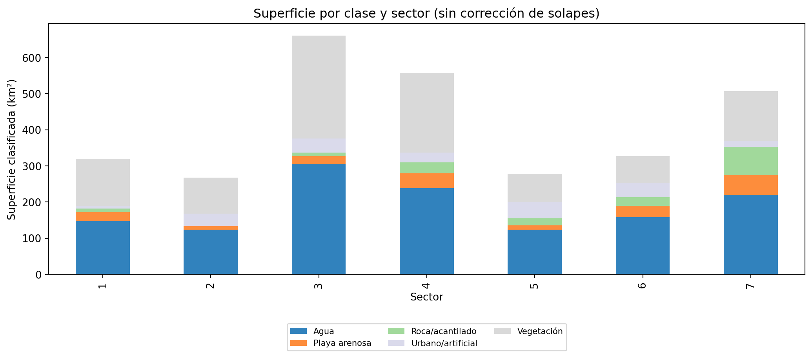
Las superficies proceden de los CSV de inferencia. No sumar como superficie nacional única sin resolver previamente los solapes entre sectores.
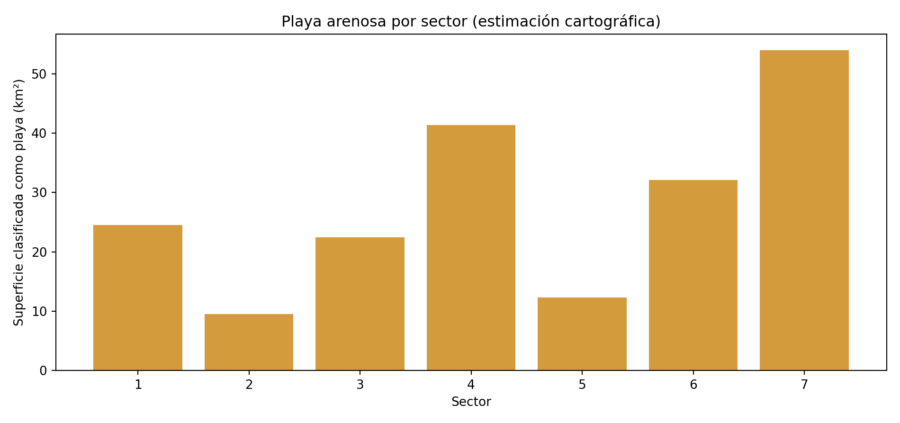
La suma simple de las siete estimaciones es 196,17 km², con posibles dobles conteos por solapes. Es superficie de píxeles etiquetados «playa», no longitud de costa ni inventario validado de playas.
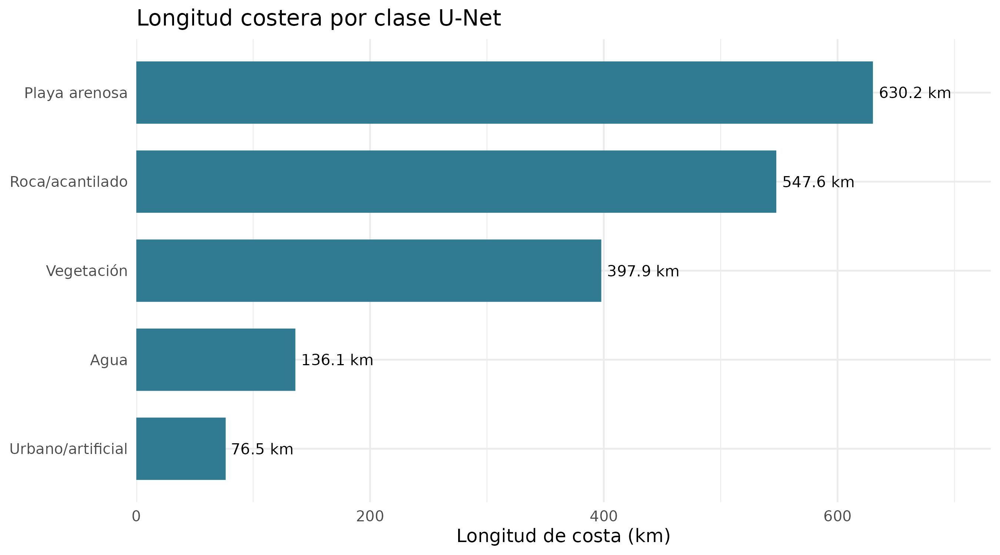
Longitudes estimadas por muestreo regular de la línea S2Coast sobre el mosaico de clasificación. Playa arenosa: 630,24 km (34,92 % de los 1.804,74 km de costa analizados; 35,24 % de la longitud con clasificación válida).
| Clase | Longitud (km) | % costa total | % costa con datos |
|---|---|---|---|
| Urbano/artificial | 76.49 | 4.24 | 4.28 |
| Playa arenosa | 630.24 | 34.92 | 35.24 |
| Agua | 136.12 | 7.54 | 7.61 |
| Vegetación | 397.86 | 22.05 | 22.25 |
| Roca/acantilado | 547.59 | 30.34 | 30.62 |
La suma de las clases representa la costa con clasificación válida, no necesariamente la longitud total de S2Coast.
| Método | Longitud (km) | % costa total | % costa con datos |
|---|---|---|---|
| U-Net: clase 2 (playa) | 630.24 | 34.92 | 35.24 |
| Probabilidad >= 0.10 | 1060.70 | 58.77 | 59.31 |
| Probabilidad >= 0.20 | 834.45 | 46.24 | 46.66 |
| Probabilidad >= 0.30 | 696.86 | 38.61 | 38.97 |
| Probabilidad >= 0.40 | 595.00 | 32.97 | 33.27 |
| Probabilidad >= 0.50 | 514.38 | 28.50 | 28.76 |
| Probabilidad >= 0.60 | 440.50 | 24.41 | 24.63 |
| Probabilidad >= 0.70 | 367.16 | 20.34 | 20.53 |
| Probabilidad >= 0.80 | 283.47 | 15.71 | 15.85 |
| Probabilidad >= 0.90 | 174.34 | 9.66 | 9.75 |
La clasificación multiclase (argmax) y los umbrales de probabilidad responden a reglas de decisión diferentes. Los porcentajes sobre la costa total incluyen los tramos sin predicción en el denominador.
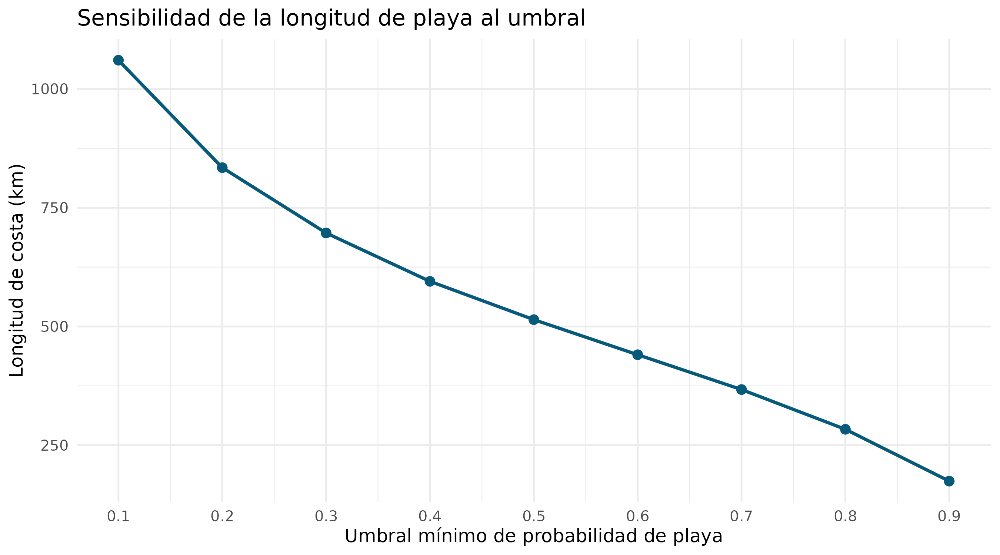
La longitud disminuye de 1.060,70 km (probabilidad ≥ 0,1) a 174,34 km (≥ 0,9). Para probabilidad ≥ 0,5 se obtienen 514,38 km, frente a 630,24 km de la clasificación U-Net.
Clasificación multiclase
Probabilidad de playa ≥ 0,5
La línea de referencia tiene 1.804,74 km, de los cuales 1.788,30 km cuentan con inferencia válida. Son estimaciones sobre S2Coast, no una delimitación independiente de playas verificada en campo. La sensibilidad al umbral debe interpretarse como un análisis de escenarios, no como validación de precisión.
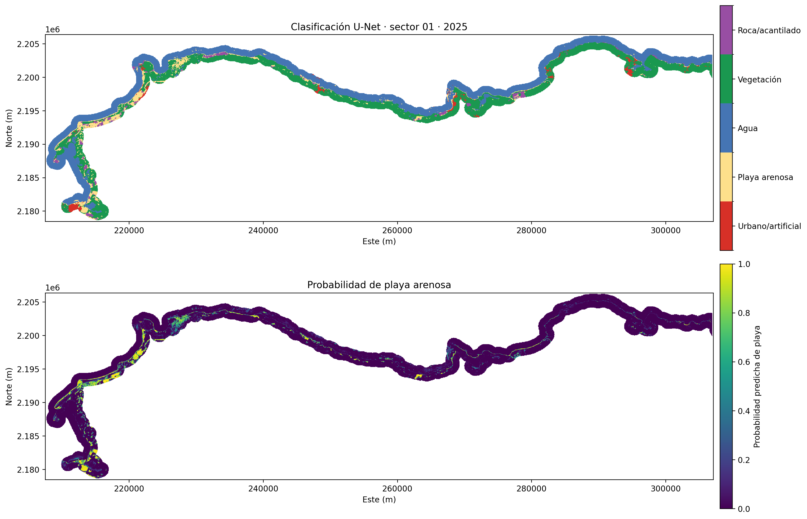
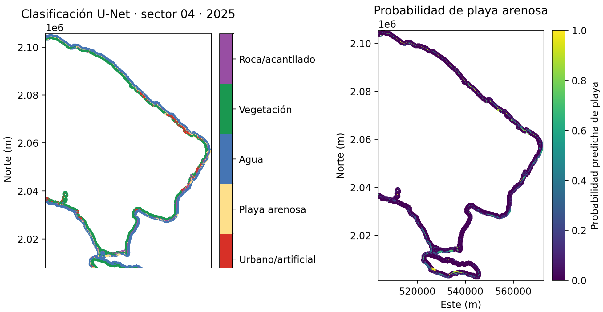
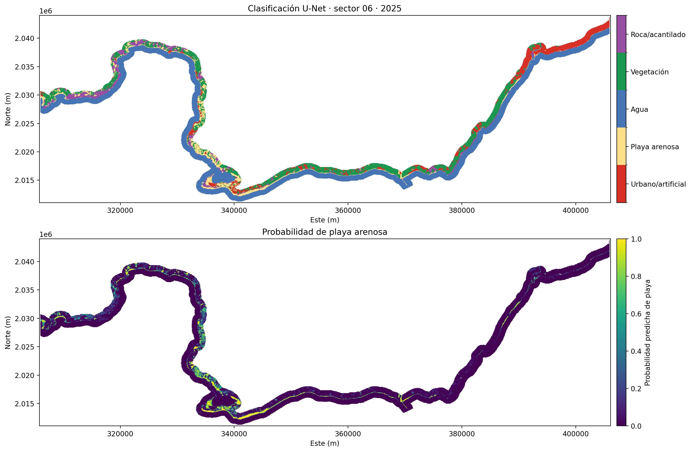
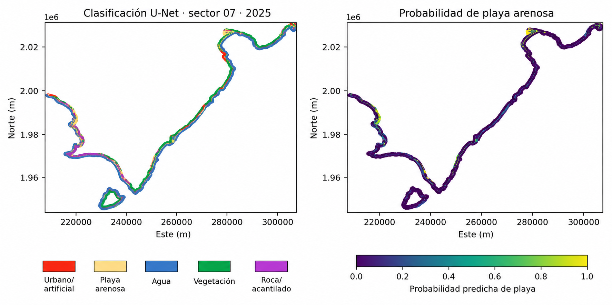
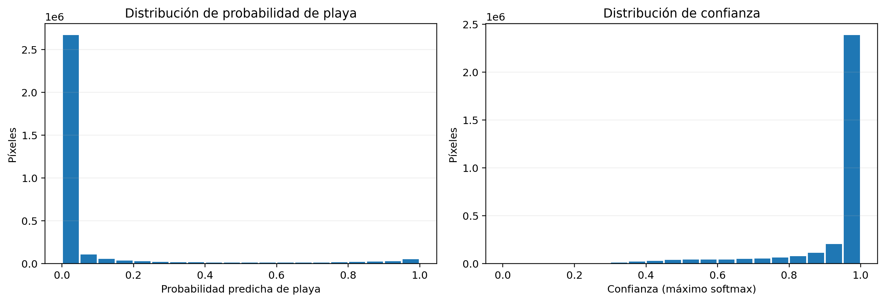
Histogramas del sector 1, donde predominan las probabilidades bajas de playa y las confianzas altas en la clase predicha; sin embargo, una confianza elevada no garantiza una clasificación correcta..
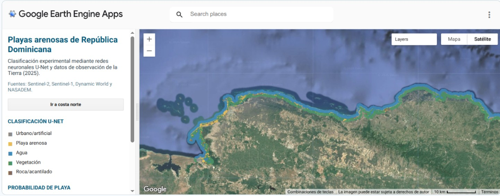
U-Net → selección de tramos arenosos candidatos
CoastSat → extracción de posiciones multitemporales de la línea de costa
Transectos → desplazamientos, tendencias y heterogeneidad espacial
Diagnóstico → erosión, acreción, estabilidad y priorización del seguimiento
(Apoyo a Gladys Rosado y su equipo, CIBIMA)
Casi 700 escenas disponibles desde 1985, ~400 aprovechables.
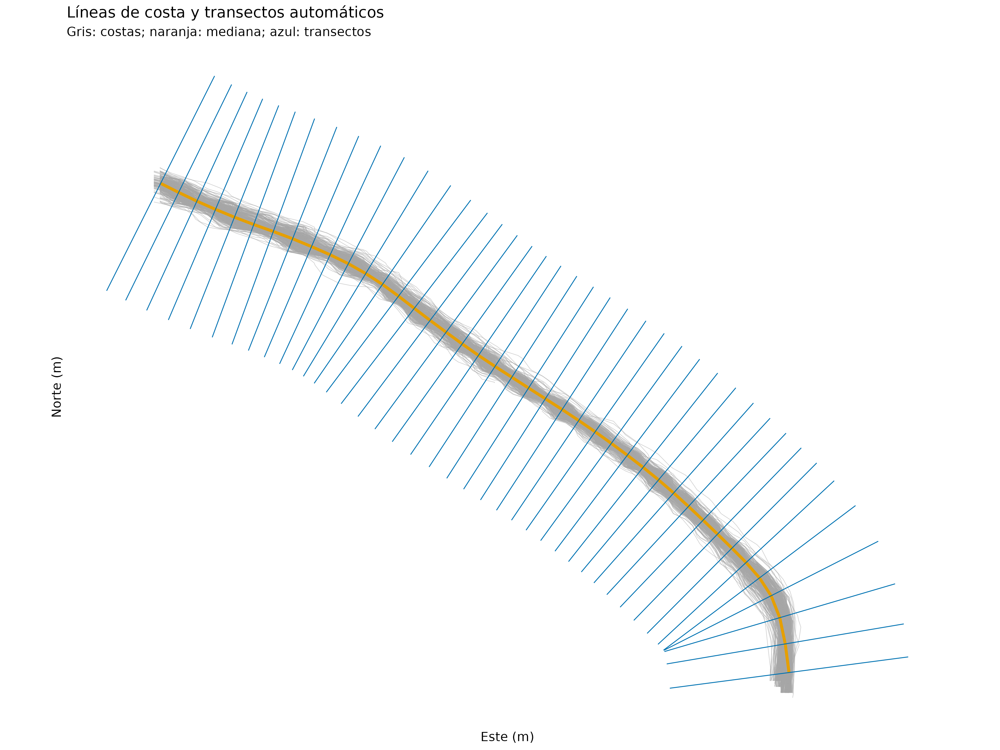
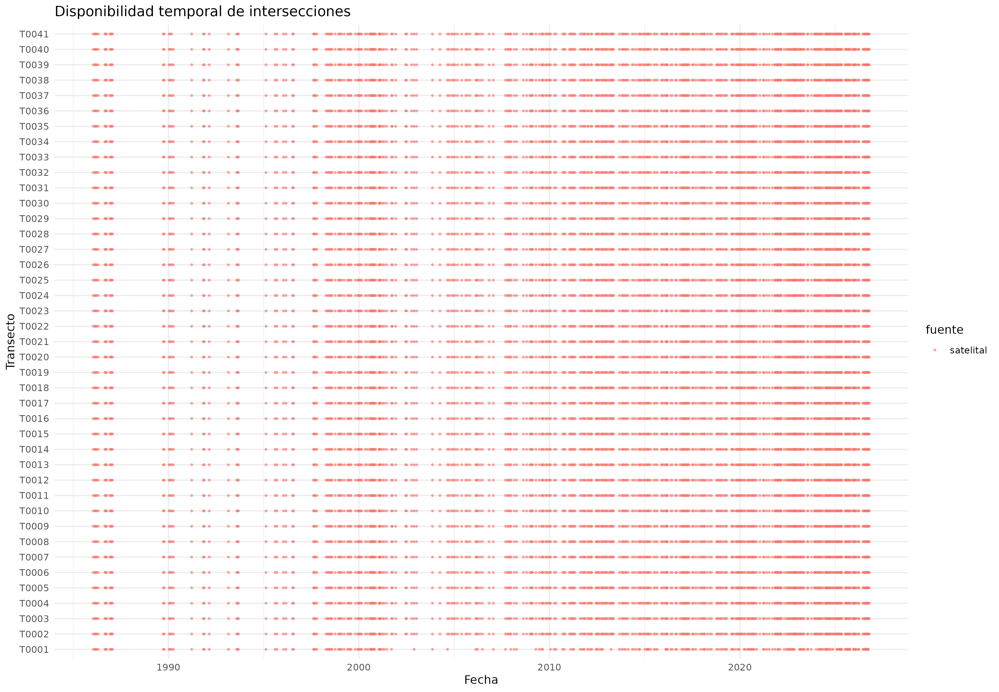
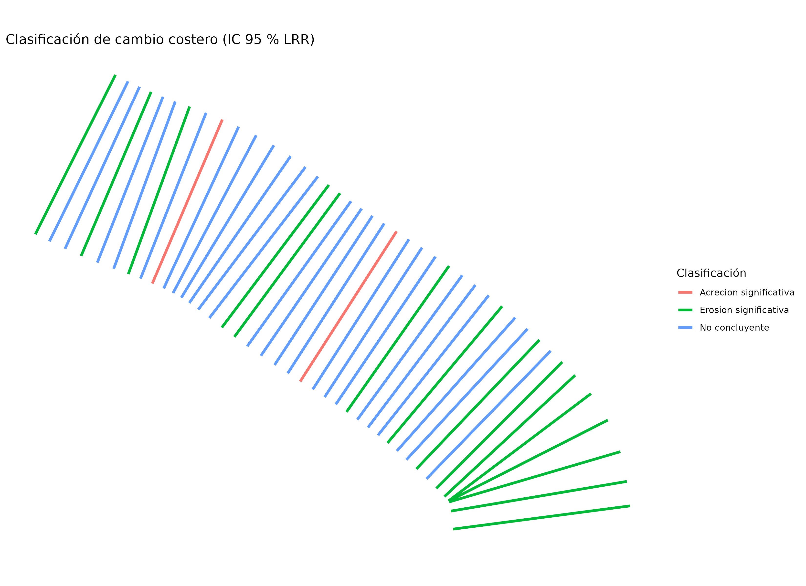
Ejemplo procedente del análisis previo de Trudillé. Ilustra la etapa de diagnóstico posterior a la selección de playas, no una validación del clasificador U-Net.
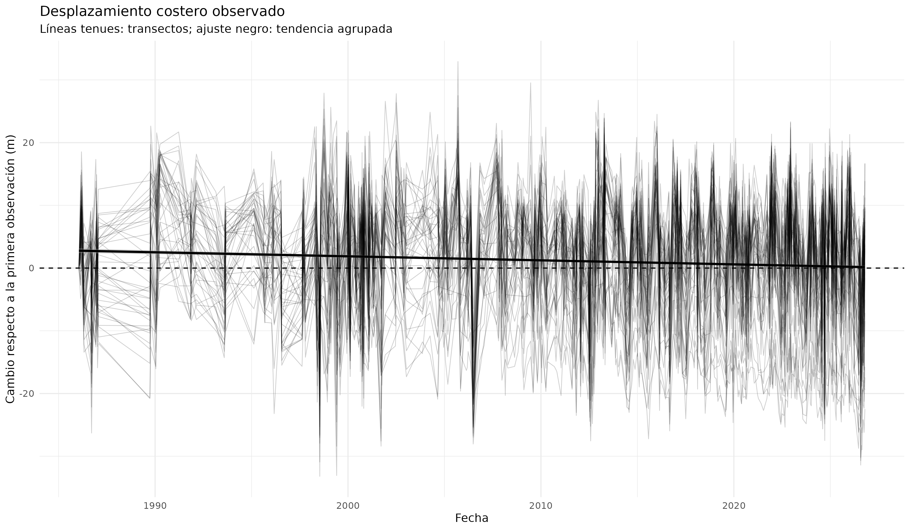
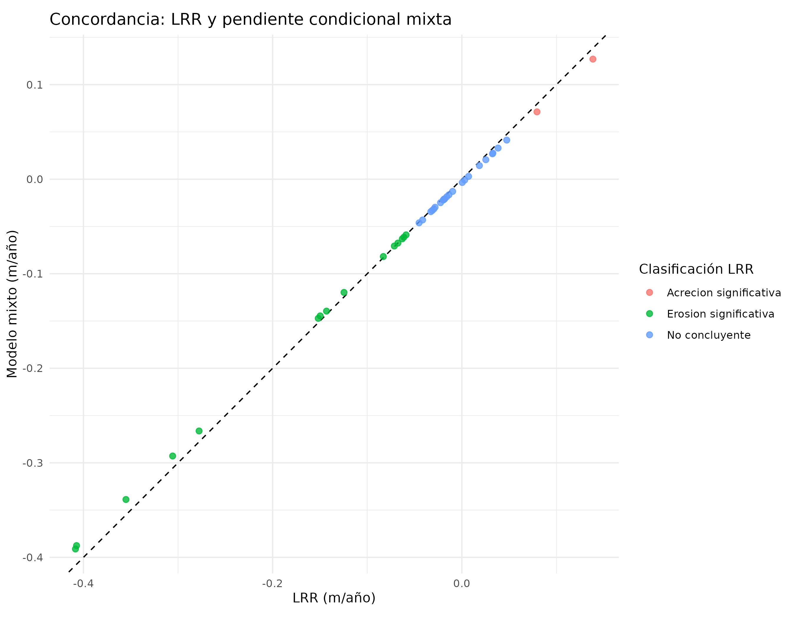
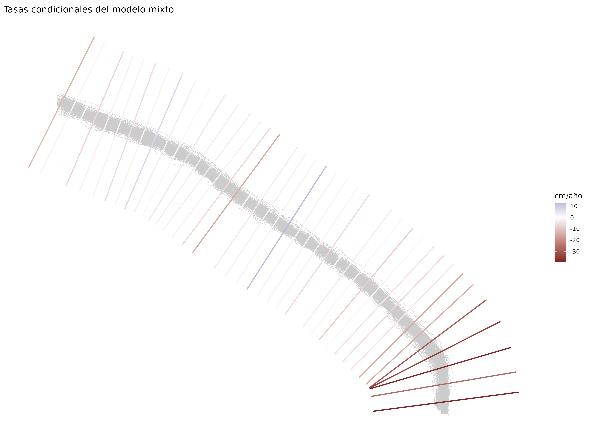
Gracias.
UASD · Detección de playas arenosas · 2026